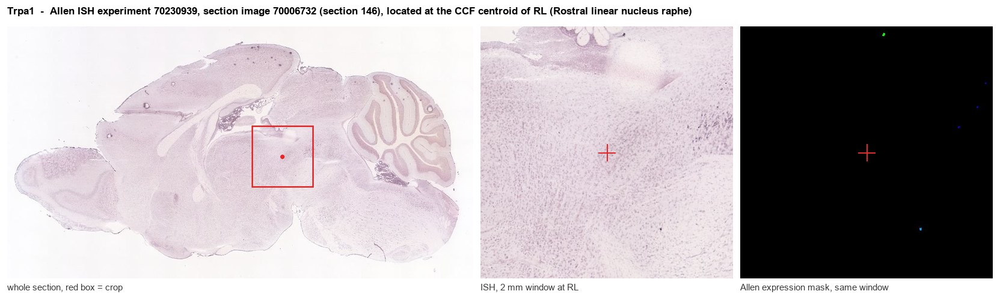

Trpa1
Transient receptor potential cation channel subfamily A member 1 (Ankyrin-like with transmembrane domains protein 1) (Wasabi receptor)
Spatial tier: REGION_BIASED · Class: ION_CHANNEL · Top region: RL (Rostral linear nucleus raphe) · Positive regions: 31/554
Function in RL: evidence, prediction, innovation
- Gene function
- TRPA1 is a calcium-permeable, non-selective cation channel of the TRP family with a long ankyrin-repeat N-terminus. It is the 'wasabi receptor': electrophilic irritants, reactive oxygen and lipid-peroxidation products such as acrolein and 4-HNE covalently modify cysteines in the channel and open it, causing calcium influx and depolarisation. It is best known in nociceptors but is also expressed by some central neurons and glia.
- Region function
- The rostral linear nucleus of the raphe is a midline midbrain nucleus of the A10 dopamine group, adjacent to the VTA; its dopaminergic and glutamatergic neurons project to extended amygdala, septum and hypothalamus and contribute to reward, stress and anxiety-like behaviour.
- Published in this region
- inferred No region-specific literature found. The closest relevant finding is that TRPA1 is functional in central neurons and senses the local chemical microenvironment: Kawabata 2023 showed TRPA1 in anterior cingulate cortex acts as an oxygen/hypoxia sensor that modulates neural activity; work on midbrain dopamine neurons has examined TRPA1 only in the context of acrolein-driven degeneration (Shi 2021).
- Predicted function
- Prediction: TRPA1 in rostral linear raphe dopamine neurons would act as a metabolic/oxidative-stress sensor that converts local hypoxia, reactive oxygen species or lipid peroxidation products into tonic calcium entry and depolarisation, raising dopamine output to extended amygdala under stress. Local TRPA1 agonist (AITC) should excite these cells and increase anxiety-like behaviour, while HC-030031 or A-967079 blockade and Trpa1 knockout are predicted to reduce stress-evoked dopamine release and protect these neurons from oxidative insult.
- Innovation
- ★★★★★ 5/5 TRPA1 is almost entirely a peripheral-nociceptor field; its presence in an A10 midline dopamine nucleus is a genuinely unexplored central role.
- Tools
- Agonists allyl isothiocyanate and cinnamaldehyde; antagonists HC-030031 and A-967079; Trpa1 knockout and Trpa1-Cre/reporter mice; dopaminergic targeting with DAT-Cre or TH-Cre in the linear raphe.
- References
Direct evidence located at the region

Allen ISH experiment 70230939, section image 70006732 (section 146): the section that contains the CCF centroid of Rostral linear nucleus raphe according to the Allen image-to-atlas alignment (reference_to_image), with a 2 mm window around that point. Left: whole section, red box = window. Middle: ISH signal. Right: Allen's expression-mask view of the same window. open this image in the Allen viewer
Direct spatial evidence

Regional expression figure

Predicted WMB × fine-CCF profile; not direct full-transcriptome spatial measurement.
Spatial profile
Evidence and specificity
- Evidence status
- PREDICTED_FINE
- Direct sources
- None; predicted localization only
- Exclusive threshold
- 12 positive regions out of 554
- Spatial specificity
- 0.305
- Top-region fraction
- 0.049
- Filter status
- PASS
Interpretation limits
- Cell-type-to-region projection is imputed expression, not direct spatial measurement.
- Adult reference atlases do not establish stability across age, sex, strain, state, or disease.
- Transcript abundance does not guarantee protein abundance or genetic-tool performance.